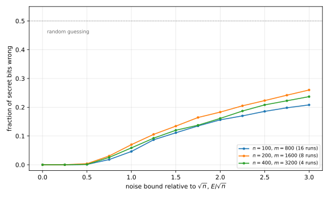

2 Reconstruction Attacks
The previous chapter’s attacks were clever, but each exploited a particular release. This chapter asks a sharper question. When does answering counting questions about a dataset, each answer only slightly wrong, let an attacker rebuild almost the whole dataset? It does not yet define what it means for an algorithm to be private. It defines a failure so flagrant that nobody would call it private, and it shows that a wide class of algorithms fails in this way.
The answers are quantitative. Exact statistics give the data away, as a census example shows. If a curator answers every possible counting query, it must make errors of order \(n\), the number of people, to avoid reconstruction. If it answers only about \(n\) random queries, errors of order \(\sqrt n\) are needed. The last section shows the second attack breaking a deployed system.
2.1 Reconstruction from exact statistics
A census collects microdata, one record per person with fields such as age, sex and race, and publishes tables of aggregates for each small area, such as a city block. The tables give counts, medians and means for groups of residents. Cells about fewer than three people are suppressed, but suppression alone does not protect anyone, because tables overlap. Suppose a block has four residents of some group, and three of them are women. Then the group has exactly one man, and a published median age for the group’s men would be his age.
Every published number is a constraint on the unknown microdata, and enough constraints leave only one possibility. The next example counts how many age combinations remain possible for three people after one line of a census table, which gives only their median and mean ages.
Example 2.1 (One line of a census table) A block’s table says that it has three men, with median age \(35\) and mean age \(47\). Call the youngest man’s age \(u_1\), the middle one’s \(u_2\) and the oldest one’s \(u_3\), so that \(u_1 \le u_2 \le u_3\). Ages are whole numbers between \(0\) and \(125\).
- Without the statistics, the number of such triples is the number of multisets of size \(3\) from \(126\) values, \(\binom{128}{3} = 341{,}376\).
- The median of three numbers is the middle one, so \(u_2 = 35\). Then \(u_1\) has \(36\) values and \(u_3\) has \(91\), which leaves \(36 \times 91 = 3{,}276\) triples.
- The mean gives \(u_1 + u_2 + u_3 = 141\), so \(u_3 = 106 - u_1\). Each \(u_1\) from \(0\) to \(35\) gives a \(u_3\) between \(71\) and \(106\), and every such \(u_3\) lies between \(u_2\) and \(125\). So exactly \(36\) triples remain, from \((0, 35, 106)\) to \((35, 35, 71)\).
One line of the table has cut the possibilities by a factor of almost \(10{,}000\). The other lines, about the same people grouped differently, add further constraints. A reconstruction attack writes all of them down and searches for microdata that satisfies every one. This search is an integer program, which is hard to solve in the worst case. In practice, though, solvers for integer programs and for Boolean satisfiability handle such instances quickly. For a fictional block of seven people, Garfinkel, Abowd and Martindale found that the constraints of its full table have exactly one solution, which a solver finds in a fraction of a second.
The attack scales. The United States Census Bureau ran it on its own published tables from the 2010 census. The reconstructed records matched the confidential ones exactly for 46% of the population, and for 71% if ages could be off by one year. Linking the reconstruction with commercial databases re-identified more than 50 million people by name. In response, the Bureau adopted differential privacy for the 2020 census.
2.2 Subset queries and blatant non-privacy
To analyse such attacks, strip the setting to its core. There are \(n\) people. Each has public identifying attributes, such as a name and a postal code, and one secret bit, such as whether they have a disease. The secret bits form the vector \(d = (d_1, \dots, d_n) \in \{0,1\}^n\). An analyst may ask how many of the people who satisfy a condition on the identifiers have secret bit \(1\). A condition such as “the name is Alice, Bob or Eve” can single out any set of people. So a query is a subset \(S \subseteq [n] = \{1, \dots, n\}\), which we identify with its indicator vector \(S \in \{0,1\}^n\). Its entry \(i\) is \(1\) when person \(i\) is in the set and \(0\) otherwise.
A curator holds the secret bits and answers such queries. The definition assumes only one thing about it, a bound \(E\) on how far each answer may be from the truth.
Definition 2.1 (Subset queries and a curator with error \(E\)) Let \(d \in \{0,1\}^n\) be the vector of secret bits. The true answer to a subset query \(S \in \{0,1\}^n\) is the number of people in \(S\) whose bit is \(1\),
\[ a(S) = \sum_{i \in S} d_i = \langle S, d \rangle , \tag{2.1}\]
where \(\langle S, d \rangle = \sum_i S_i d_i\) is the inner product of the indicator vector \(S\) with \(d\).
A curator with error \(E\) answers each query \(S\) with a response \(r(S)\), a number within \(E\) of the truth, \(|r(S) - a(S)| \le E\). Within that bound, the curator may choose its answers in any way, depending on \(d\) and on all the queries.
The error is not assumed to be random. The curator may pick the most misleading answer within the allowed range, so every attack below works against random noise too. Some error is needed, since for each person \(i\) the exact answer to the query \(S = \{i\}\) is that person’s secret bit.
To measure how much an attacker learns, count the bits it gets wrong. The attacker outputs a guess \(c \in \{0,1\}^n\) of the secret vector \(d\). The Hamming distance \(\operatorname{dist}(c, d) = |\{i : c_i \ne d_i\}|\) is the number of positions where the guess is wrong.
The next definition names the clearest possible failure of privacy. Some attacker gets all but a vanishing fraction of the bits right, for every secret vector, except with a vanishing probability.
Definition 2.2 (Blatant non-privacy) Consider a family of curators, one for each number of people \(n\). The family is blatantly non-private if three things exist. The first is an attacker that interacts with the curator and outputs a guess \(c \in \{0,1\}^n\). The second is a bound \(g(n)\) on the number of wrong bits, with \(g(n)/n \to 0\). The third is a failure probability \(\beta(n)\), with \(\beta(n) \to 0\). They must satisfy, for every \(n\) and every secret vector \(d \in \{0,1\}^n\),
\[ \Pr\left[\operatorname{dist}(c, d) \le g(n)\right] \ge 1 - \beta(n). \tag{2.2}\]
An attacker that gets all but a vanishing fraction of the bits right, written \(o(n)\) wrong bits, has learned the secret of almost everyone. Whatever privacy means, this is a violation of it.
2.3 Asking every query
The first attack ignores cost. It asks all \(2^n\) subset queries and then outputs any candidate that agrees with every answer.
Theorem 2.1 (Reconstruction from all subset queries) Let \(E \ge 0\), and let a curator with error \(E\) answer all \(2^n\) subset queries, giving the answer \(r(S)\) to the query \(S\). An attacker that outputs any \(c \in \{0,1\}^n\) satisfying
\[ \left|\langle S, c \rangle - r(S)\right| \le E \quad \text{for every } S \subseteq [n] \tag{2.3}\]
finds such a \(c\), and every such \(c\) differs from the secret vector \(d\) in at most \(4E\) positions, \(\operatorname{dist}(c, d) \le 4E\).
Proof.
- The true vector \(d\) satisfies Equation 2.3 by Definition 2.1, so a candidate exists.
- Let \(I_0 = \{i : d_i = 0\}\). The attacker asked the query \(I_0\), so Equation 2.3 gives \(\langle I_0, c\rangle \le r(I_0) + E\). The curator’s bound gives \(r(I_0) \le \langle I_0, d\rangle + E = E\). Hence \(\langle I_0, c \rangle \le 2E\). This sum counts the positions of \(I_0\) where \(c_i = 1 \ne d_i\), so \(c\) and \(d\) differ in at most \(2E\) positions of \(I_0\).
- Let \(I_1 = \{i : d_i = 1\}\). In the same way, \(\langle I_1, c \rangle \ge r(I_1) - E \ge \langle I_1, d \rangle - 2E = |I_1| - 2E\). The number of positions of \(I_1\) where \(c_i = 0\) is \(|I_1| - \langle I_1, c\rangle \le 2E\).
- The sets \(I_0\) and \(I_1\) partition \([n]\), so \(\operatorname{dist}(c, d) \le 4E\).
The attacker does not know \(I_0\) and \(I_1\), which is why it asks every query. The bound is already strong for large errors, and with errors that are a vanishing fraction of \(n\) it meets Definition 2.2.
Corollary 2.1 If \(E = n/401\), the attacker of Theorem 2.1 recovers more than 99% of the bits. If \(E = E(n)\) with \(E(n)/n \to 0\), the curator is blatantly non-private, with \(g(n) = 4E(n)\) and \(\beta(n) = 0\).
Proof. For the first claim, \(4n/401 < n/100\), since \(4 \times 100 < 401\). The second claim is Theorem 2.1 with Definition 2.2, because the attacker never fails.
Errors of order \(n\) are the most a counting query can bear, since every answer lies between \(0\) and \(n\). The next result shows that this is also what it takes to resist the attack. With error \(E\), no attacker can guarantee fewer than about \(E/2\) wrong bits, however many queries it asks.
Proposition 2.1 (Error \(E\) hides \(E/2\) bits) Let \(E \ge 1\) and \(k = \min(\lfloor E \rfloor, n)\). For every attacker, which may ask any queries in any adaptive order, there are a vector \(d \in \{0,1\}^n\) and a curator with error \(E\) for which \(\Pr[\operatorname{dist}(c, d) \ge k/2] \ge 1/2\).
Proof.
- Let \(d\) be all zeros, and let \(d'\) have ones in its first \(k\) positions and zeros elsewhere, so \(\operatorname{dist}(d, d') = k\).
- On the data \(d'\), let the curator answer every query exactly, \(r(S) = \langle S, d' \rangle\). On the data \(d\), let it give the same answers. Their error is \(|\langle S, d' - d\rangle| \le k \le E\), so both are curators with error \(E\).
- The answers to every query are the same on \(d\) and on \(d'\). So the attacker’s output \(c\) has the same distribution in the two cases.
- For every \(c\), the triangle inequality gives \(\operatorname{dist}(c, d) + \operatorname{dist}(c, d') \ge k\), so at least one of the two distances is at least \(k/2\). Hence \(\Pr[\operatorname{dist}(c,d) \ge k/2] + \Pr[\operatorname{dist}(c,d') \ge k/2] \ge 1\), and one of the two probabilities is at least \(1/2\).
So for the attacker who asks everything, the threshold between blatant non-privacy and safety is error of order \(n\), and Theorem 2.1 is tight up to a factor of \(8\). But an attack with \(2^n\) queries is not a practical threat once \(n\) is more than a few dozen.
2.4 Random queries
The second attack asks about \(n\) queries, each a uniformly random subset of the people. It works against much smaller errors than the first, of order \(\sqrt n\), which is still large compared with the error a useful statistic can tolerate.
The idea is to fix a wrong candidate \(c\) and show that a random query is likely to expose it. If \(c\) differs from \(d\) in \(k\) positions, the answers \(\langle S, c \rangle\) and \(\langle S, d \rangle\) differ by a sum of about \(k/2\) random signs, which is typically of size \(\sqrt k\). A curator with error \(E\) can hide a difference of at most \(2E\). So when \(\sqrt k\) is much larger than \(E\), a random query rules \(c\) out with constant probability. To make “typically” precise, we need a lower bound on the size of a random sum, the opposite of a concentration inequality.
Lemma 2.1 (A random subset sees a fixed vector) Let \(w \in \mathbb R^n\), with Euclidean length \(\|w\|_2 = (\sum_i w_i^2)^{1/2}\). Let \(S\) be a uniformly random subset of \([n]\), so that each \(i\) is in \(S\) independently with probability \(1/2\). Then the sum \(\langle S, w\rangle\) of the entries of \(w\) in \(S\) satisfies
\[ \Pr\left[\,|\langle S, w \rangle| \ge \tfrac14 \|w\|_2\,\right] \ge \frac{3}{32}. \tag{2.4}\]
Proof.
- If \(w = 0\) the event always holds, so let \(w \ne 0\). Write \(S_i = (1 + \xi_i)/2\), where the signs \(\xi_i \in \{-1, +1\}\) are independent and uniform. Then \(\langle S, w\rangle = \tfrac12(a + Z)\), with the constant \(a = \sum_i w_i\) and the random sum \(Z = \sum_i \xi_i w_i\).
- Moments of \(Z\). Expand the powers and use independence. A product of the \(\xi_i\) has mean \(0\) unless each index appears an even number of times. So \(\mathbb E[Z^2] = \sum_i w_i^2 = \|w\|_2^2\), and
\[ \mathbb E[Z^4] = \sum_i w_i^4 + 3\sum_{i \ne j} w_i^2 w_j^2 = 3\|w\|_2^4 - 2\sum_i w_i^4 \le 3\|w\|_2^4 . \tag{2.5}\]
- Paley–Zygmund inequality. Let \(Y \ge 0\) have \(\mathbb E[Y] > 0\), and let \(s \in [0,1]\). Split \(\mathbb E[Y]\) according to whether \(Y > s\,\mathbb E[Y]\), and apply the Cauchy–Schwarz inequality to the second part:
\[ \mathbb E[Y] \le s\,\mathbb E[Y] + \mathbb E\left[Y \mathbf 1[Y > s\,\mathbb E[Y]]\right] \le s\,\mathbb E[Y] + \sqrt{\mathbb E[Y^2]\,\Pr[Y > s\,\mathbb E[Y]]}. \tag{2.6}\]
Rearranging gives \(\Pr[Y > s\,\mathbb E[Y]] \ge (1-s)^2\,\mathbb E[Y]^2/\mathbb E[Y^2]\).
- Apply step 3 to \(Y = Z^2\) with \(s = 1/4\), using step 2. The event \(|Z| > \|w\|_2/2\) has probability at least \((3/4)^2/3 = 3/16\).
- Removing the constant \(a\). For every \(z\), \(|a + z| + |a - z| \ge 2|z|\), so \(|a + Z| \ge |Z|\) or \(|a - Z| \ge |Z|\). Flipping all signs maps \(Z\) to \(-Z\) and preserves the distribution and the event of step 4. Hence the events \(\{|Z| > \|w\|_2/2,\ |a+Z| \ge |Z|\}\) and \(\{|Z| > \|w\|_2/2,\ |a-Z| \ge |Z|\}\) have the same probability. Together they cover the event of step 4, so each has probability at least \(3/32\).
- On the first of these events, \(|\langle S, w\rangle| = \tfrac12|a + Z| \ge \tfrac12|Z| > \tfrac14\|w\|_2\).
With the lemma, the union bound over all candidates gives the attack. The candidates are the \(2^n\) vectors in \(\{0,1\}^n\), so about \(n\) queries suffice to rule out all the wrong ones at once.
Theorem 2.2 (Reconstruction from random queries) Let \(E \ge 0\) and \(\beta \in (0, 1)\), and let
\[ m \ge \frac{32}{3}\left(n \ln 2 + \ln\frac1\beta\right). \tag{2.7}\]
The attacker draws \(m\) independent, uniformly random subsets \(S_1, \dots, S_m\) of \([n]\) before seeing any answer. A curator with error \(E\) answers them with \(r_1, \dots, r_m\). The attacker outputs any \(c \in \{0,1\}^n\) with \(|\langle S_j, c\rangle - r_j| \le E\) for all \(j\). Then such a \(c\) exists and, with probability at least \(1-\beta\) over the queries, every such \(c\) has
\[ \operatorname{dist}(c, d) \le 64E^2 . \tag{2.8}\]
Proof.
- The true vector \(d\) satisfies all \(m\) constraints by Definition 2.1, so a candidate exists.
- One far candidate. Fix \(c\) with \(k = \operatorname{dist}(c, d) > 64E^2\), and let \(w = c - d\). Its entries are in \(\{-1, 0, 1\}\) and exactly \(k\) are nonzero, so \(\|w\|_2 = \sqrt k > 8E\). By Lemma 2.1, each query has \(|\langle S_j, w\rangle| \ge \sqrt k/4 > 2E\) with probability at least \(3/32\). The queries are independent, so the probability that \(|\langle S_j, w\rangle| \le 2E\) for every \(j\) is at most \((1 - 3/32)^m \le e^{-3m/32}\).
- All far candidates. There are at most \(2^n\) candidates. By the union bound, the event \(B\) that some candidate with \(\operatorname{dist}(c, d) > 64E^2\) has \(|\langle S_j, c - d\rangle| \le 2E\) for every \(j\) has probability at most \(2^n e^{-3m/32}\), which is at most \(\beta\) by the choice of \(m\).
- Consistent candidates are close. Suppose \(B\) does not occur. If \(c\) is consistent with the answers, the triangle inequality gives \(|\langle S_j, c - d\rangle| \le |\langle S_j, c\rangle - r_j| + |r_j - \langle S_j, d \rangle| \le 2E\) for every \(j\). So \(c\) is not far, which is Equation 2.8. The event \(B\) depends only on the queries, so this holds whatever answers the curator chose.
The number of queries is about \(7.4n\): for \(n = 1{,}000\) and \(\beta = 0.01\) the theorem asks for \(m = 7{,}443\). Setting \(\beta = 2^{-n}\) gives the asymptotic statement.
Corollary 2.2 If \(E = E(n)\) with \(E(n)/\sqrt n \to 0\), the curator is blatantly non-private against \(15n\) random queries, with \(g(n) = 64E(n)^2\) and \(\beta(n) = 2^{-n}\). If \(E = \alpha\sqrt n\), the same attacker gets at most \(64\alpha^2 n\) bits wrong with probability at least \(1 - 2^{-n}\).
Proof. With \(\beta = 2^{-n}\), the bound on \(m\) in Theorem 2.2 is \(\frac{32}{3}\cdot 2n\ln 2 \approx 14.79\,n \le 15n\). Then \(g(n) = 64E(n)^2 = 64 n\,(E(n)/\sqrt n)^2\), and \(g(n)/n \to 0\).
2.4.1 An efficient attack
The attacker of Theorem 2.2 asks few queries but searches \(2^n\) candidates. Relaxing the search to fractional vectors makes it a linear program, so the attack is called linear programming (LP) decoding. It looks for a vector of fractions \(x \in [0,1]^n\) with \(|\langle S_j, x\rangle - r_j| \le E\) for all \(j\). A linear program with \(n\) variables and \(2m + 2n\) inequalities is solvable in time polynomial in \(n\) and \(m\). The attacker then rounds \(x\) to the nearest bit vector. The analysis is the same as before, with one extra step, because a fractional candidate is not one of \(2^n\) points. A fine grid replaces the set of candidates.
Theorem 2.3 (Reconstruction by linear programming) Let \(E > 0\), \(\beta \in (0,1)\), \(K = \lceil n/(2E) \rceil\), and
\[ m \ge \frac{32}{3}\left(n \ln(2K+1) + \ln\frac1\beta\right). \tag{2.9}\]
The attacker draws \(m\) random subsets and receives answers from a curator with error \(E\), as in Theorem 2.2. It finds any \(x \in [0,1]^n\) with \(|\langle S_j, x\rangle - r_j| \le E\) for all \(j\), and it outputs \(c_i = 1\) if \(x_i \ge 1/2\) and \(c_i = 0\) otherwise. With probability at least \(1 - \beta\) over the queries,
\[ \operatorname{dist}(c, d) \le 676E^2 . \tag{2.10}\]
Proof.
- The vector \(d\) is feasible, so the linear program has a solution \(x\). Let \(z = x - d \in [-1, 1]^n\). As in step 4 of Theorem 2.2, \(|\langle S_j, z\rangle| \le 2E\) for every \(j\).
- Rounding errors. If \(c_i \ne d_i\), then either \(d_i = 0\) and \(x_i \ge 1/2\), or \(d_i = 1\) and \(x_i < 1/2\). In both cases \(|z_i| \ge 1/2\), so \((2z_i)^2 \ge 1\). Summing over \(i\) gives \(\operatorname{dist}(c, d) \le 4\|z\|_2^2\).
- The grid. Let \(h = 1/K \le 2E/n\), and let \(G\) be the set of vectors whose entries are multiples of \(h\) in \([-1, 1]\). It has \((2K+1)^n\) points. Round each entry of \(z\) to the nearest multiple of \(h\) to get \(z' \in G\), with \(|z_i - z'_i| \le h/2 \le E/n\). Then \(|\langle S_j, z - z'\rangle| \le \sum_i |z_i - z'_i| \le E\), so \(|\langle S_j, z'\rangle| \le 3E\) for every \(j\). Also \(\|z - z'\|_2 \le \sqrt n \cdot E/n \le E\).
- Far grid points are ruled out. Fix \(g \in G\) with \(\|g\|_2 > 12E\). By Lemma 2.1, each query has \(|\langle S_j, g\rangle| \ge \|g\|_2/4 > 3E\) with probability at least \(3/32\). As in Theorem 2.2, the probability that \(|\langle S_j, g\rangle| \le 3E\) for every \(j\) is at most \(e^{-3m/32}\). A union bound over the \((2K+1)^n\) grid points bounds the probability that this happens for some far grid point by \((2K+1)^n e^{-3m/32} \le \beta\).
- Outside that event, step 3 shows that \(z'\) is not far, so \(\|z'\|_2 \le 12E\) and \(\|z\|_2 \le 13E\). Step 2 gives \(\operatorname{dist}(c,d) \le 4 \cdot 169 E^2 = 676E^2\).
For \(1 \le E \le n\), the factor \(\ln(2K+1)\) is at most \(\ln(n+3)\), so the attack runs in polynomial time with \(O(n \log n)\) queries, and it gets at most \(676E^2\) bits wrong. Error \(o(\sqrt n)\) is again blatantly non-private. The constants \(64\) and \(676\) are far from the truth. Figure 2.1 shows the attack on simulated data, where it recovers almost every bit at errors that the theorem cannot handle.

A sharper analysis removes the logarithm. It bounds the smallest singular value of the random query matrix, which shows directly that every fractional \(z\) with small answers on all \(m\) queries is short. Then \(O(n)\) queries suffice for the linear program too (Dwork and Roth, 2014, Section 8.1). A linear program that minimizes the total error instead of bounding each error even tolerates a constant fraction of answers with arbitrary error (Dwork, McSherry and Talwar, 2007). That proof needs bounds on random matrices that this book does not develop. The simpler, inefficient version of the tolerance to arbitrary answers follows from the argument above.
Proposition 2.2 (Tolerating some arbitrary answers) Let \(E \ge 0\), let \(\beta \in (0,1)\) be a failure probability, let \(\rho \in [0, 3/128)\) be the fraction of answers that may be arbitrary, and let
\[ m \ge \frac{2048}{9}\left(n\ln 2 + \ln\frac1\beta\right). \tag{2.11}\]
The attacker draws \(m\) random subsets as in Theorem 2.2. The curator answers at least \((1-\rho)m\) of them with error at most \(E\) and the others arbitrarily, choosing which after seeing the queries. The attacker outputs any \(c \in \{0,1\}^n\) with \(|\langle S_j, c\rangle - r_j| \le E\) for at least \((1-\rho)m\) of the queries. With probability at least \(1 - \beta\), every such \(c\) has \(\operatorname{dist}(c, d) \le 64E^2\).
Proof.
- The true vector \(d\) meets the condition, so a candidate exists.
- Fix \(c\) with \(\operatorname{dist}(c,d) > 64E^2\) and let \(V_j = \mathbf 1[|\langle S_j, c - d\rangle| > 2E]\) indicate that query \(j\) exposes \(c\). As in step 2 of Theorem 2.2, the \(V_j\) are independent with mean at least \(3/32\). Hoeffding’s inequality gives \(\Pr\left[\sum_j V_j < 3m/64\right] \le \exp(-2m(3/64)^2) = e^{-9m/2048}\).
- A union bound over at most \(2^n\) candidates shows that, with probability at least \(1 - 2^n e^{-9m/2048} \ge 1-\beta\), every far candidate has \(\sum_j V_j \ge 3m/64\).
- Suppose this holds, and let \(c\) be an output. The queries where \(c\) is consistent and those answered with error at most \(E\) each number at least \((1-\rho)m\), so at least \((1-2\rho)m\) queries are of both kinds. On each of them, the triangle inequality gives \(|\langle S_j, c - d\rangle| \le 2E\), so \(V_j = 0\). Hence \(\sum_j V_j \le 2\rho m < 3m/64\), and \(c\) is not far.
These attacks are nearly tight. The chapters on approximate differential privacy and advanced composition show that a curator can answer about \(n\) subset queries with error of order \(\sqrt n\) and still meet the definition of differential privacy. The bound holds up to logarithmic factors and factors that depend on the privacy parameters. With \(m\) queries, error of order \(\sqrt m\) suffices. So the line between blatant non-privacy and a formal guarantee runs at error \(\sqrt n\) for \(n\) queries.
2.5 Reconstruction in practice
The random-query attack looks theoretical, since it asks questions about arbitrary sets of people. A deployed system showed otherwise. The company Aircloak built Diffix, a query interface that let analysts ask an unlimited number of counting queries on sensitive data. It promised privacy with less error than differential privacy would add. From December 2017 to May 2018, Aircloak ran a bounty program with prizes of up to $5,000 for a successful attack.
Diffix answered counting queries, which include subset queries, but with defences against the attacks above. Each condition in a query added its own layer of Gaussian noise with standard deviation \(1\), so the error of an answer had standard deviation equal to the square root of the number of conditions. The interface rejected queries that combined conditions with OR, and it suppressed small counts and altered extreme values. A random subset of \(n\) people needs about \(n/2\) conditions to describe person by person, and those conditions must be joined by OR. Both defences block that route.
Cohen and Nissim reversed the order of the attack. Instead of drawing a random set and then describing it, they drew a random description from a family of single conditions, each of which selects a set that looks random. Their conditions test a digit of an arithmetic expression in each person’s numeric identifier, raised to a power. For example, take a multiplier \(3\) and an exponent \(1/2\), and keep a person when the second decimal digit of \((3 \cdot \text{identifier})^{1/2}\) is even. The person with identifier \(7\) is kept, because \(\sqrt{21} = 4.5825\ldots\) has second decimal digit \(8\). One of the queries they sent kept a row when
\[ \left\lfloor 100\,(2\cdot\text{identifier})^{0.7} + 0.5 \right\rfloor = \left\lfloor 100\,(2\cdot\text{identifier})^{0.7} \right\rfloor , \tag{2.12}\]
which holds exactly when the third decimal digit of \((2\cdot\text{identifier})^{0.7}\) is at most \(4\). For identifier \(2000\) that number is \(332.232\ldots\), which is kept, and for \(2001\) it is \(332.348\ldots\), which is not. Of the \(1{,}001\) identifiers from \(2000\) to \(3000\), the condition keeps \(501\).
Each such query has a fixed, small number of conditions, so its error does not grow with the number of rows, and Diffix added noise of standard deviation \(4\) to these queries. Cohen and Nissim targeted four ranges of identifiers that held between \(73\) and \(142\) rows, and they asked \(3{,}500\) queries about each. Gaussian noise is not bounded, so they used the linear program that minimizes the total error, which tolerates a few answers with large error in the spirit of Proposition 2.2. It recovered the secret attribute of every row in all four ranges. Aircloak then restricted the query language to block the attack.
The theorems of this chapter do not apply to these queries as stated, because a fixed formula is not a random subset. Their proofs use the randomness of the queries only through Lemma 2.1, by which each query exposes a fixed wrong candidate with constant probability. The digit tests behave that way on real identifiers, which is an empirical fact and not a theorem. That was enough to break the system.
2.6 Summary
| Result | Statement |
|---|---|
| Example 2.1 | a median and a mean cut \(341{,}376\) possible ages to \(36\) |
| Definition 2.2 | an attacker recovers all but \(o(n)\) secret bits with probability tending to \(1\) |
| Theorem 2.1 | all \(2^n\) queries with error \(E\) reveal all but \(4E\) bits |
| Proposition 2.1 | error \(E\) can hide \(E/2\) bits from any attacker |
| Lemma 2.1 | a random subset has \(\lvert\langle S, w\rangle\rvert \ge \|w\|_2/4\) with probability at least \(3/32\) |
| Theorem 2.2 | \(\frac{32}{3}(n\ln 2 + \ln\frac1\beta)\) random queries with error \(E\) reveal all but \(64E^2\) bits |
| Theorem 2.3 | a linear program does the same in polynomial time with \(O(n\log n)\) queries, all but \(676E^2\) bits |
| Proposition 2.2 | a fraction below \(3/128\) of arbitrary answers does not stop the attack |
2.7 References
- Simson Garfinkel, John M. Abowd and Christian Martindale, “Understanding Database Reconstruction Attacks on Public Data”, 2019. Reconstruction of census blocks from published tables with a satisfiability solver.
- John M. Abowd, “Staring Down the Database Reconstruction Theorem”, 2019. The Census Bureau’s reconstruction and re-identification experiment on the 2010 census.
- Irit Dinur and Kobbi Nissim, “Revealing Information while Preserving Privacy”, 2003. Blatant non-privacy, the attack with all subset queries and the efficient attack with random queries.
- Cynthia Dwork, Frank McSherry and Kunal Talwar, “The Price of Privacy and the Limits of LP Decoding”, 2007. The linear-programming attack with \(O(n)\) queries, robust to a constant fraction of arbitrary answers.
- Cynthia Dwork and Aaron Roth, The Algorithmic Foundations of Differential Privacy, 2014. Section 8.1 presents both reconstruction attacks.
- Raymond Paley and Antoni Zygmund, “A Note on Analytic Functions in the Unit Circle”, 1932. The inequality used in Lemma 2.1.
- Aloni Cohen and Kobbi Nissim, “Linear Program Reconstruction in Practice”, 2020. The attack on Diffix with pseudo-random digit-test queries, and simulations of the attack.